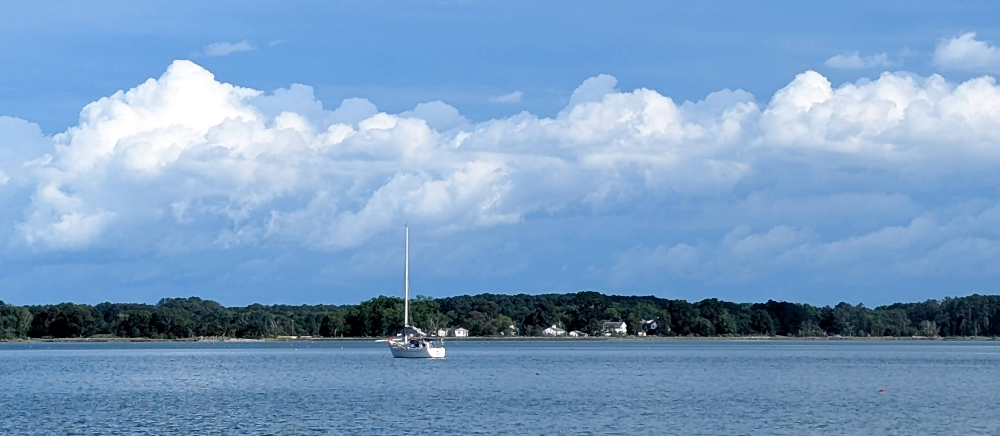
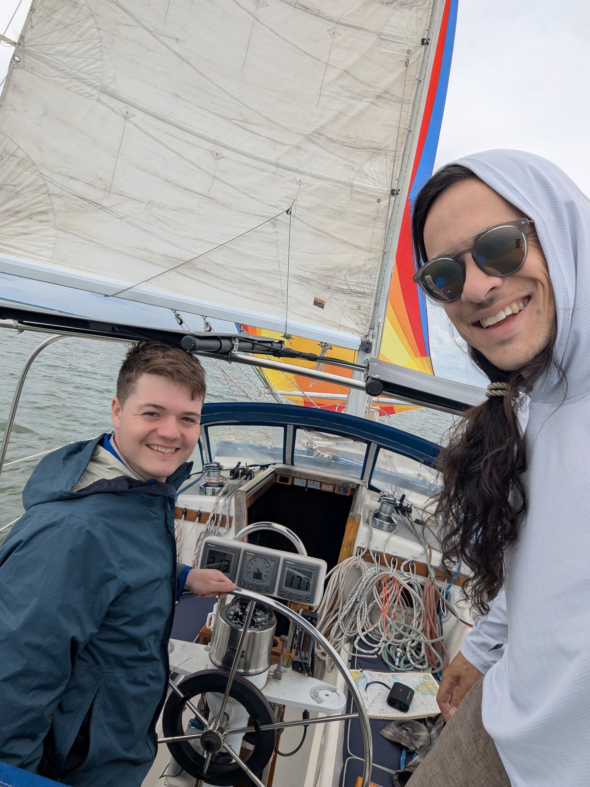

Welcome Aboard
SV Aion is a modern sailing vessel on a journey across the seas. This page shares our story through real-time GPS tracks, stunning photography, and detailed sailing logs.
Whether you're a fellow sailor, a curious traveler, or a friend back home — we invite you to follow along and explore our voyage.
Live Voyage Map
Below is an interactive map showing our latest sailing routes and anchorages.
Meet the Crew
We're a small crew passionate about adventure, sustainability, and life at sea. Our mission is to discover new places, connect with people, and share the magic of sailing.
Photo Gallery
Explore highlights from our voyages through this dynamic gallery.
Loading…